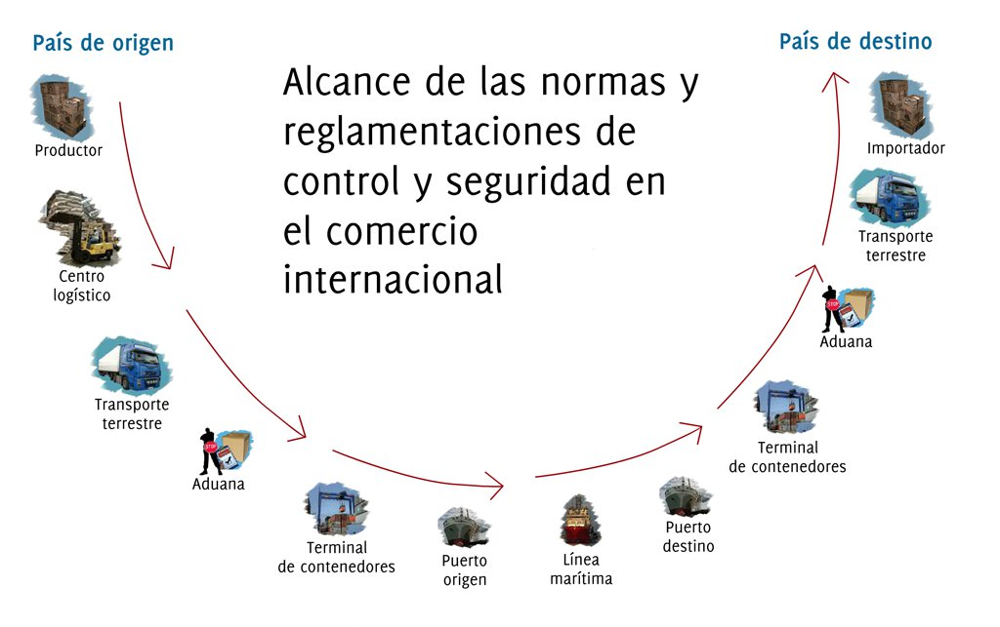

Alcance de la figura del OEA
- Es un programa de adhesión voluntaria y gratuita.
- Apunta a la pequeña, mediana o gran empresa.
- Incluye los actores toda la cadena de suministro internacional.
- La autorización de OEA se otorga por término indefinido (si incumplelos requisitos se suspende o termina).
- Se debe acreditar la disponibilidad de sistemas informáticos de gestiónde riesgos y de inventarios.
- El trabajo de diseño e implementación de la figura es realizada demanera conjunta con el sector privado.
- Es un programa del gobierno nacional e involucra diferentes autoridadesde control.
Beneficios del OEA
- Aplicación de procedimientos simplificados adoptados por la DIAN.
- Reconocimiento como socio que garantiza seguridad y protección.
- Asignación de un oficial de operaciones por parte de cada autoridad decontrol, que brindará soporte en sus operaciones.
- Facultad para ejercer de manera simultánea, actividades como:transportador, agente de aduanas, depósito, agente de cargainternacional, intermediarios de tráfico postal.
- Notificación anticipada de la selección para el proceso de validación.
- Reconocimiento mutuo internacional de la figura en sus relacionescomerciales, cuando se suscriban acuerdos con otros países.
Otros datos importantes sobre BASC
BASC fue escogida para hacer parte de un grupo selecto del sector privado como Comité Consultivo de la OMA, de la cual hacen parte 13 organizaciones mundiales y 16 empresas multinacionales, que asesoran en la definición final del marco normativo, en el proceso de validación de las empresas, definición de beneficios y el reconocimiento mutuo entre las aduanas para que se brinde a las empresas de los países participantes, una facilitación en sus procesos aduaneros tanto en origen como en destino.
La globalización de los negocios, la ampliación de los acuerdos de libre comercio y el interés por fortalecer la competitividad de la región impone el reto de trabajar unidos.
BASC es un emocionante ejemplo de cómo se ha dado la cooperación entre la industria y las entidades de Gobierno, resolviendo juntos sus particulares requerimientos con unos objetivos comunes.
En el proceso de implementación del O.E.A. en Colombia, BASC ha sido escogido por la DIAN como integrante del grupo consultivo del sector privado en Colombia del cual hacen parte (ANALDEX, FITAC, DIAN y BASC) cada grupo rota cada seis meses. Esto dará un mayor reconocimiento a las empresas por parte de la comunidad internacional, pues los criterios C-TPAT se han convertido en punto de referencia para las Administraciones Aduaneras, en el esquema del "Marco Normativo para asegurar y facilitar el comercio Global" definido por la Organización Mundial de Aduanas (OMA), que busca la estandarización de los requisitos y establecer Operadores Económicos Autorizados que sean reconocidos por las aduanas del mundo.
La comunidad de aduanas ha resuelto tomar acciones para reducir cargas administrativas en el comercio legítimo, especialmente para las PYMES y apoyar la finalización de las negociaciones de Doha de la Organización Mundial del Comercio. Las medidas de las aduanas que apoyan la seguridad no deben ser utilizadas como nuevas barreras o generar demoras adicionales. El uso del manejo de riesgo apoyado en la colaboración aduanas-empresas es un elemento clave. Basado en este principio, la OMA y la OMB continuarán con su política de compromiso constructivo con el congreso de EE.UU. para convencer a sus miembros de revisar su legislación en el escaneo del 100%.
Una de las medidas y estrategias que ha tomado la Organización Mundial BASC (OMB), que favorecen la seguridad del comercio internacional y la competitividad de las empresas es la Cooperación con Autoridades.
Es importante que el sector privado trabaje en cooperación con las autoridades con el objeto de prevenir actividades ilícitas que pudieran afectar al comercio internacional. Un aviso oportuno de cualquier actividad irregular, puede ayudar a que su empresa no se afecte en las operaciones y servicios.
Toda información de cualquier tipo de actividad irregular o ilícita que sus compañías puedan tener, tiene que ser comunicada inmediatamente al Director o Directora Ejecutiva de su capítulo local BASC.
Mayra Hernández
Presidenta Internacional
World BASC Organization, Inc.
fuente: http://www.wbasco.org
Fecha: junio 2008
INICIATIVAS DE SEGURIDAD - NORMAS Y REGLAMENTACIONES DE CONTROL Y SEGURIDAD

Recordemos que el objetivo final de los programas de comercio seguro es contrarrestar cualquier amenaza que pueda afectar la dinámica del mercado mundial y desestabilizar las buenas relaciones entre quienes conforman su cadena logística.
Para controlar y asegurar esta Cadena Logística del Comercio Internacional, diferentes entidades se han agrupado para apoyar iniciativas, programas, legislaciones, normativas o regulaciones, que apunten a mejorar la seguridad conservando al mismo tiempo las condiciones de competitividad del comercio.
Así, surgen estándares de seguridad y protección, para garantizar que todos los actores de la cadena participen en forma comprometida con acciones que faciliten el intercambio seguro de la mercancía hacia el siguiente actor.
Alcance de las normas y reglamentaciones de control y seguridad en el comercio internacional
Haga clic sobre esta imagen para ver el alcance de las normas
Todas estas normas y reglamentaciones internacionales rigen la cadena logística de comercialización en diferentes etapas y componentes.